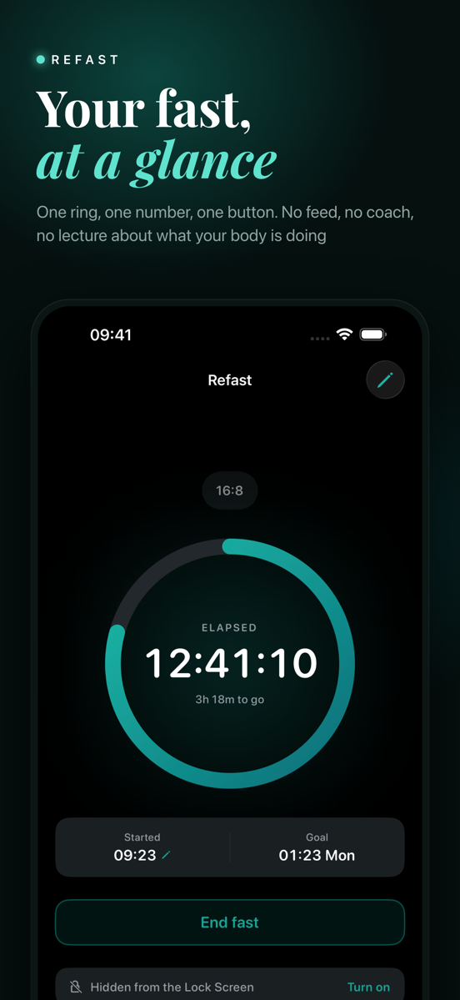
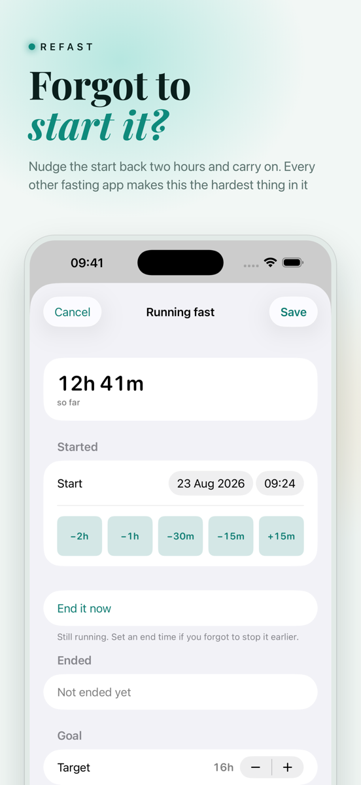
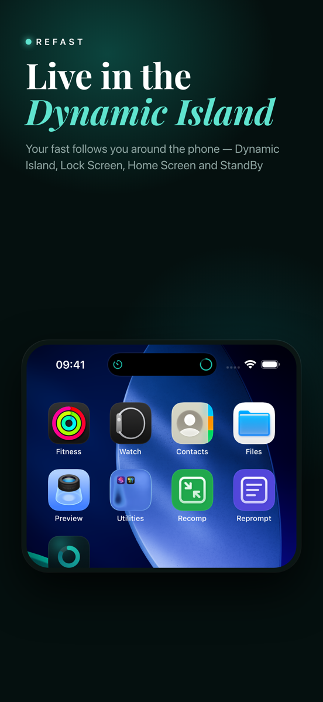
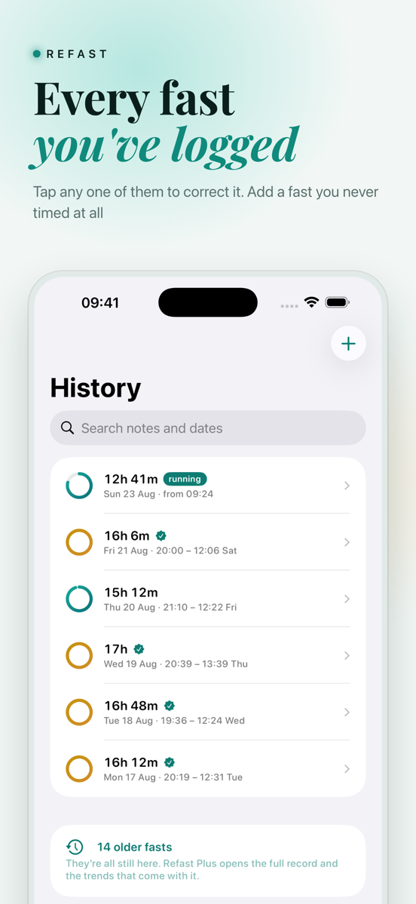
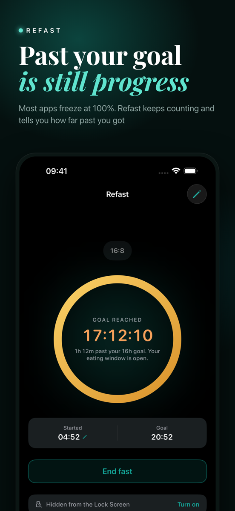
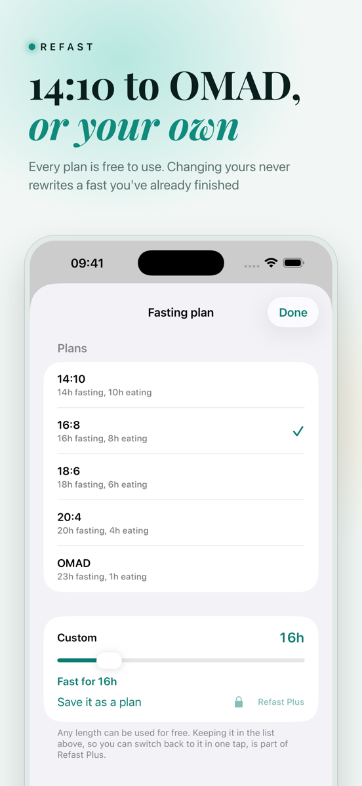

Refast
How long is left. That is the whole idea.
Get it on the App Store · Free





A fasting timer that shows you the one thing you actually want to know, and does not try to be a food diary, a coach or a subscription while it is at it.
A ring and a number
Start your fast and the ring fills towards your goal, then keeps counting past it so you can see how far over you went. When you break the fast, it shows when your eating window closes.
Your history, honestly kept
Forgot to start it, or to stop it? Fix the times in a few taps, or add a fast by hand. Your streak, goal rate and this week's count are free, and Refast Plus opens your full history and long range trends, laid out to read at a glance on the Mac as well as the phone.
Pay once, if at all
The timer is free. Refast Plus is a one time unlock that adds your full history, detailed trends, saved custom plans, four more themes and icons, a full backup file, and iCloud sync across iPhone, iPad and Mac. No subscription, no account, no ads, and your fasts stay on your own devices and your own iCloud.
Get Refast
Free to download and free to use as a timer, with Refast Plus as a one-time unlock. No subscription, no account, no tracking.
Get it on the App Store · Free